Reference
THE KIDS
JOHN EGBERT
- Handle
- ectoBiologist [EB]
- Land
- Land of Wind and Shade
- Dream Moon
- Prospit
- Interests
- REALLY TERRIBLE MOVIES · program computers · PARANORMAL LORE · AMATEUR MAGICIAN · GAMES
ROSE LALONDE
- Handle
- tentacleTherapist [TT]
- Land
- Land of Light and Rain
- Dream Moon
- Derse
- Interests
- RATHER OBSCURE LITERATURE · creative writing · BESTIALLY STRANGE AND FICTITIOUS · PSYCHOANALYSIS · KNIT · VIDEO GAMES
DAVE STRIDER
- Handle
- turntechGodhead [TG]
- Land
- Land of Heat and Clockwork
- Dream Moon
- Derse
- Interests
- TURNTABLES AND MIXING GEAR · BANDS NO ONE'S EVER HEARD OF BUT YOU · WEIRD DEAD THINGS PRESERVED IN VARIOUS WAYS · AMATEUR PHOTOGRAPHER
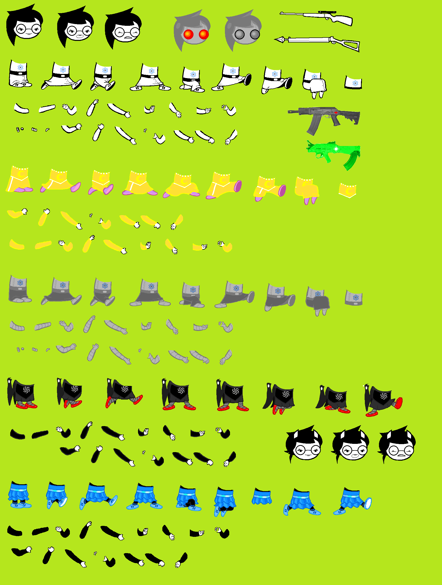
JADE HARLEY
- Handle
- gardenGnostic [GG]
- Land
- Not yet revealed
- Dream Moon
- Prospit
- Interests
- HORTICULTURE · CARTOON SHOWS OF CONSIDERABLE NOSTALGIC APPEAL · NUCLEAR PHYSICS · RATHER ADVANCED GADGETRY · PRECOGNITIVE PROGNOSTICATION
THE TWELVE TROLLS
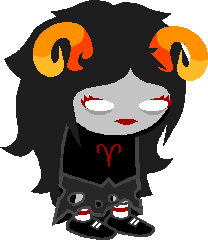
♈ ARADIA MEGIDO
- Handle
- apocalypseArisen [AA]
- Blood
- Rust
- Interests
- ARCHEOLOGY · MYSTIC RUINS · VOICES OF THE DEAD · CERTAIN KIND OF ROLE PLAYING
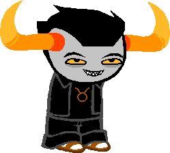
♉ TAVROS NITRAM
- Handle
- adiosToreador [AT]
- Blood
- Bronze
- Interests
- FAIRY TALES AND FANTASY STORIES · CARD AND ROLE PLAYING GAMES · ALTERNIAN SLAM POETRY · FLIGHT · FAIRIES
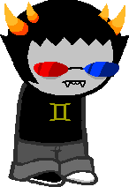
♊ SOLLUX CAPTOR
- Handle
- twinArmageddons [TA]
- Blood
- Gold
- Interests
- ALL THE CODES · APICULTURE NETWORKING · TOTALLY SICK HACKER · BIFURCATION · newest and hottest games
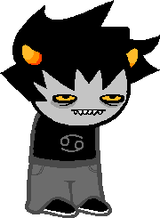
♋ KARKAT VANTAS
- Handle
- carcinoGeneticist [CG]
- Blood
- Mutant candy-red
- Interests
- RIDICULOUSLY TERRIBLE ROMANTIC MOVIES AND ROMCOMS · program computers · COMPUTER VIRUSES · THRESHECUTIONERS · REALLY COOL SICKLE
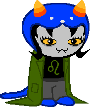
♌ NEPETA LEIJON
- Handle
- arsenicCatnip [AC]
- Blood
- Olive
- Interests
- FRIENDLY ROLE PLAYING · GREAT BEASTS · SHARP CLAWS AND TEETH · WALL COMICS · EXCITING TALES FROM THE HUNT
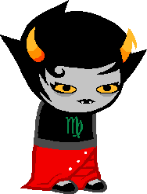
♍ KANAYA MARYAM
- Handle
- grimAuxiliatrix [GA]
- Blood
- Jade
- Interests
- LANDSCAPING · TOPIARY · RAINBOW DRINKERS · SHADOW DROPPERS · FORBIDDEN PASSION · FASHION and DESIGN · LIVELY COLORFUL PATTERNS
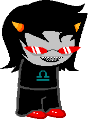
♎ TEREZI PYROPE
- Handle
- gallowsCalibrator [GC]
- Blood
- Teal
- Interests
- dragons · COLORFUL SCALES · SCALEMATES · LIVE ACTION ROLE PLAYING · justice · BRUTAL ALTERNIAN LAW
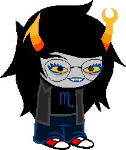
♏ VRISKA SERKET
- Handle
- arachnidsGrip [AG]
- Blood
- Cerulean
- Interests
- EXTREME ROLE PLAYING · high stakes and chance · APOCALYPSE BUFF · DOOMSDAY DEVICES · DARK PROGNOSTICATION · BLACK ORACLES
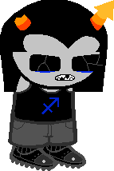
♐ EQUIUS ZAHHAK
- Handle
- centaursTesticle [CT]
- Blood
- Indigo
- Interests
- STRONG · ARCHERADICATORS · THE FINE ARTS · NUDE MUSCLEBEAST PORTRAITS · LOVE OF STRENGTH · strong and sturdy robots
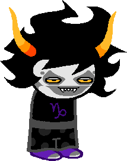
♑ GAMZEE MAKARA
- Handle
- terminallyCapricious [TC]
- Blood
- Purple
- Interests
- CLOWNS OF A GRIM PERSUASION · RATHER OBSCURE CULT · ONE WHEEL DEVICE · A FINE BEVERAGE · A LITTLE BAKING SOMETIMES · ALL THESE HORNS
♒ ERIDAN AMPORA
- Handle
- caligulasAquarium [CA]
- Blood
- Violet
- Interests
- EXTREME ROLE PLAYING · DOOMSDAY DEVICE · MILITARY HISTORY AND LEGENDARY CONQUERORS · EXAGGERATED EMOTIONAL THEATRICS · MAGIC
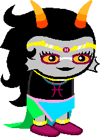
♓ FEFERI PEIXES
- Handle
- cuttlefishCuller [CC]
- Blood
- Fuchsia
- Interests
- CULLING THE FAUNA OF THE DEEP · AQUATIC HOOFBEASTS · CUTTLEFISH · WILDLIFE ADOPTION FACILITY · ROLE PLAYING SCENARIO
TROLL CHEAT SHEET
HEMOSPECTRUM
Blood color determines caste. Rust is low. Fuchsia is highest. Karkat's candy red blood is a mutation outside the normal spectrum.
LUSUS
An animal guardian who raises a young troll in place of parents. Plural: LUSII.
TROLLIAN
The trolls' chat client. It can contact people at different points in their personal timelines.
FLARP
Extreme live-action roleplaying. Tavros, Vriska, Aradia, and Terezi's old campaign produced several lasting injuries.
GAME CHEAT SHEET
SBURB / SGRUB
The human and troll versions of the same reality-altering game.
INCIPISPHERE
The game cosmos: Skaia, Prospit, the player lands, the Veil, and Derse.
PROTOTYPING
What gets put into a KERNELSPRITE also changes the session's enemies and royalty.
ECTOBIOLOGY
Paradox cloning across time. Both sessions involve players helping cause their own births.
RECKONING
The meteor assault from the Veil. Skaia redirects the meteors through portals into the players' home world's history.
DOOMED TIMELINE
An alternate branch that cannot sustain the main causal loop, even though its players can still act before it collapses.
WHO'S WHO
EXILES
WARWEARY VILLEIN → WAYWARD VAGABOND [WV]
PARCEL MISTRESS → PEREGRINE MENDICANT [PM]
AUTHORITY REGULATOR → AIMLESS RENEGADE [AR]
WHITE QUEEN → WINDSWEPT QUESTANT [WQ]
MIDNIGHT CREW / DERSITES
SPADES SLICK ↔ JACK NOIR
DIAMONDS DROOG ↔ DRACONIAN DIGNITARY
CLUBS DEUCE ↔ COURTYARD DROLL
HEARTS BOXCARS ↔ HEGEMONIC BRUTE
OTHER NAMES TO REMEMBER
DOC SCRATCH · polite, omniscient-seeming, manipulative
SNOWMAN · exiled Black Queen of the trolls' session
LORD ENGLISH · the Felt's unseen boss; almost everything else is still a question mark